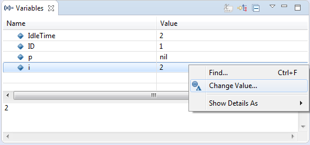

The Variables view is used when debugging a POOSL model. It shows all parameters and variables that are accessible by the selected node in the Execution Tree view. When selecting a variable in the Variables view, the value may be expanded recursively with its internal variables.

The displayed string representation of each value is computed using the printString method from the data class of the value. If this data class is a non-primitive class, then an integer ID is appended. The IDs provide an object-oriented view that can be used to determine which variables refer to the same object. Variables will not be shown when an external adapter instance is selected in the debug view (see Co-simulation for more info).
The value of a variable can be changed during debugging. To change the value, right click the variable and select "Change Value..."; in the opened window you can enter a new POOSL value. Alternatively, click on the value in the second column, and directly enter a new POOSL value. The integer ID for non-primitive classes should not be part of a new POOSL value.
